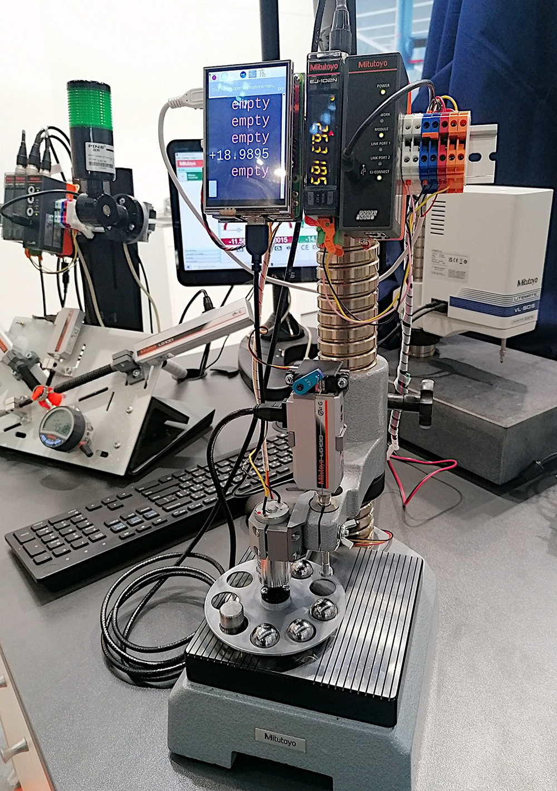

Připojení a komunikace EJ-counterů s prostředím, díl 3
Demonstrační projekt
V předchozím článku této série jsme si prakticky ukázali princip komunikace počítače s blokem EJ counterů. Nicméně - pomyslná třešnička na dortu stále chybí: jak to všechno využít v konkrétní aplikaci? Právě z toho důvodu vznikl následující demonstrační prototyp simulující příklad použití lineárního snímače při průběžné kontrole dílů na výrobní lince.
Řešení
Protože jsme chtěli kompaktní, levný a snadno realizovatelný projekt, vyšli jsme z následujícího:
- výrobní linka = otočný karusel simulující kontinuální proud měřených dílů (např. na pásu)
- mechanické ovládání lineárního snímače - elektricky pomocí malého serva (Hitec HS-85MG)
- řídící a vyhodnocovací systém - co nejkompaktnější, přitom snadno programovatelný - ve finále RaspberryPi 3b
Realizace
Základní nosnou část tvoří stojan pro úchylkoměry s ocelovou deskou (215-505-10), na kterém je umístěn vlastní snímač LG-100 se zdvihem 10 mm. Veškeré další mechanické a elektrické příslušenství je pak navěšené okolo.
Elektrická část a řízení
Ukázalo se, že USB výstup komunikační jednotky lineárních snímačů je navržen jako CDC device. A to je automaticky rozpoznáno i na Linux systémech, kde následně automaticky dojde k vytvoření příslušného virtuálního sériového zařízení. A to je skvělá zpráva. Tím se otevřela možnost použít ke komunikaci s jednotkou i kompaktní linuxové SBC (Single Board Computer) jako mezi kutily oblíbené RaspberryPi a podobné. Navíc, takový SBC snadno zvládne řízení celého systému, tedy kromě zpracování výsledků z LG snímačů i řízení zdvihu (servo) a karuselu. Prostě všechno.
RaspberryPi bylo doplněno 3,5' TTF displejem a malou deskou rozhraní pro ovládání motoru karuselu a magnetického spínače jeho polohy (magnet u každého otvoru pro díl). Na RPi běží Raspberry PI OS, vlastní řídící program je napsaný v Pythonu. Původní plán bylo udělat komfortní program s GUI knihovnou Tkinter, kvůli časovému tlaku na dokončení byl použit jen výstup dat do terminálového okna. Barevně je rozlišen dobrý/špatný/jiný díl a neobsazená pozice. A praxe ukázala, že i toto jednoduché řešení je plně funkční a pohodlně použitelné.
Dodatečně jsme aplikaci rozšířili o možnost naměřená data (hodnoty) posílat "někam dál". To kam dál bylo jasné s nástupem aktuální verze MeasurLink v. 10. Tato verze přinesla podporu MQTT. A MQTT je v oblasti malých počítačů, IoT a Home automation mimořádně rozšířený. Rozšíření naší Python aplikace bylo snadné a tak na tomto prototypu můžeme prezentovat i přenos dat přes ethernet do téměř libovolného vyššího systému.

Odkazy a další informace
Aplikace s lineárními snímači a EG (EH) countery